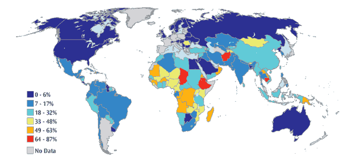

In today’s world where tons of problems continue to cause hardships and struggles to humanity, one that continues to strike us is the lack of water. There are lots of news today reporting that multiple countries and places are having a crisis due to the lack of pure and clean water supply that they could use. They are overcome by these problems because there are no decent water sources since either the bodies of water near them have dried out due to the intense heat of the sun or these bodies of water have been polluted already. As fellow friends, family, or just humans, we can all help them through our own little ways. We can start by conserving our own water.

Percentage of Population Worldwide Without Reasonable Access to Safe Drinking Water
Turning off the faucet when we are not using it, limiting the use of water during baths, and by using washing machines infrequently, all these little ways are big steps in conserving our water. Through doing these, we can save up on water and eventually be able to contribute the water we saved to those who need them. We can also participate in water clean-ups. Lots of bodies of water in our world today are polluted and dirty and through everyone’s help in cleaning them, there could be a clean source of water that they can use. Another thing we could do is to donate to non-profit organizations who help people acquire clean sources of water. These are all ways that we could help our brothers and sisters in acquiring a basic necessity. Let us continue helping each other and save each other and our world.
A non-profit organization that provides access to safe water and sanitation in developing countries by working with local water organizations to build wells and provides seminars about good hygiene.
Charity:Water
Non-profit that brings clean and safe drinking water to people in developing countries by using 100% of do nations to developing clean water technologies that range from wells to water filtration.
Waves For Water
It is a a humanitarian organization that provides clean water to communities in need around the world through its Courier Program of distributing water filters to travelers.
"Water is an extremely important resource that we cannot live without. But there are Filipinos who are still being left behind in terms of access to improved water sources, especially in rural communities"
In 2016, one of the top 10 leading causes of deaths in the Philippines was acute watery diarrhoea, claiming over 139,000 lives.
Two-thirds of the Globe Face Water Shortages
“... The discrepancies have been explained by the fact that water shortages were previously measured on an annual rather than a monthly basis, therefore hiding the water scarcity in particular places and specific parts of the year..."